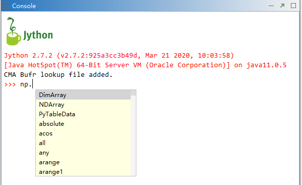

MeteoInfoLab启动预加载¶
在“MeteoInfo -> pylib”目录中的文件milab.py会在MeteoInfoLab启动时自动运行，里面的代码是导入mipylib包，并运行 mipylib包中__init__.py文件中的所有语句，起到预加载常用包和函数的目的，以方便后期使用。例如绘图函数plot会在软件启 动时预加载，Console里>>> help(plot)才能正常运行。Mipylib包的__init__.py文件中包含了所有预加载信息：
from .numeric import *
import numeric as np
import numeric.random as random
import numeric.linalg as linalg
from .geolib.migeo import *
import geolib.topology as topo
from .dataset import *
from .plotlib import *
import plotlib as plt
import meteolib as meteo
import imagelib
from dataframe import *
import os
mi_dir = os.path.dirname(os.path.dirname(os.path.dirname(os.path.abspath(__file__))))
migl.mifolder = mi_dir
lookup_cma = os.path.join(mi_dir, 'tables', 'bufr', 'tablelookup_cma.csv')
if os.path.isfile(lookup_cma):
try:
is_ok = dataset.add_bufr_lookup(lookup_cma)
except:
is_ok = False
if is_ok:
print('CMA Bufr lookup file added.')
MeteoInfoLab Jython包的开发在函数命名和参数设置上尽量和Python的Numpy、Matplotlib、Pandas等包一致，方便学习 和应用。可以看到numeric包也给出了别名np，plotlib的别名是plt。在主界面的Editor和Console里有代码提示功能，因此可 以输入 np. 和 plt. 来查看两个包包含的常用函数，能够帮助用户更准确的输入代码。
“MeteoInfo -> pylib -> mipylib”目录中的migl.py文件中包含了几个全局变量：
milapp 是MeteoInfoLab主界面对象；
currentfolder 是MeteoInfoLab的当前目录；
mifolder 是MeteoInfo软件所在的目录。
还有三个函数来获取地图数据、示例文件、颜色图文件的目录，方便在脚本中使用：
get_map_folder()函数：获取地图数据所在目录；
get_sample_folder()函数：获取示例文件所在目录；
get_cmap_folder()函数：获取颜色图文件所在目录。
中国气象局的Bufr文件的解码需要用到自定义的表格文件，也在程序启动时进行了加载。
Jython包预加载会影响MeteoInfoLab的启动时间，如果对启动时间有要求，尤其是在命令行直接运行MeteoInfoLab Jython文件， 可以把milab.py文件中的加载语句注释掉，但是Jython程序代码中必须增加针对性的加载语句。